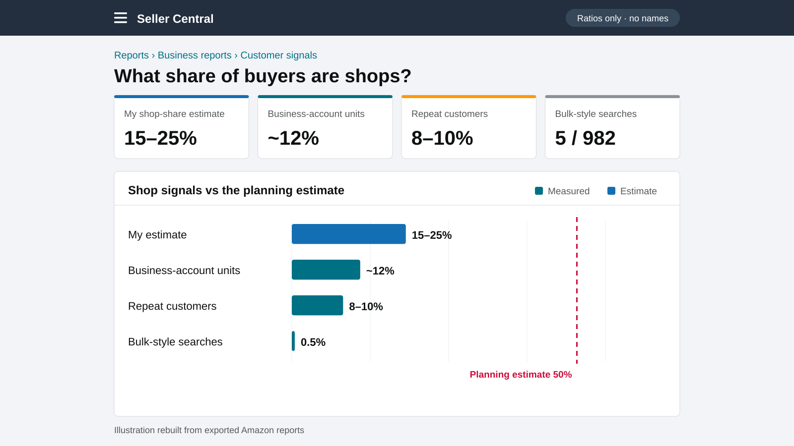

DIY or shop? Estimating B2B share.
Planning assumed half of Amazon buyers were repair shops. Six indirect data sources, from Brand Analytics to search queries, point to a mostly DIY base with a real shop niche in specific parts.
Matías Gaglio ·
Leer en español
Who actually buys our lug nuts?
At Revolution Supply, planning was built around a simple assumption: about half of Amazon customers are small repair shops and half are do-it-yourself owners. My own reading was much lower, around 15 to 25% shops. The difference matters. It changes the content (installation help or bulk value), the pack sizes, the pricing, and whether B2B pricing tiers are worth the effort.
Amazon doesn't tell you who a customer is. So the research collects every indirect signal available and checks which way each one points.
Six sources, read one at a time.
| Source | Finding | Points to |
|---|---|---|
| Brand Analytics demographics (Q3) | Buyers skew 35–54, middle income, truck and Jeep owners | DIY, but inconclusive |
| Market basket analysis (Q3) | One set per vehicle, very little bulk buying | DIY |
| Business Reports, B2B columns | Business accounts are about 12% of units and convert at about 19% versus 9% overall | A small shop share |
| B2B share by product | Shops concentrate in specific products (below) | Shops are a niche, not half |
| Repeat purchases | Repeat buyers are 8–10% of customers, and only 2–7% even on B2B-heavy products | DIY |
| Search Query Performance (Oct) | Bulk or wholesale-style queries: 5 of 982 | DIY |
Not everywhere. In specific parts.
The strongest finding came from splitting B2B share by product instead of looking at the brand total. Business buyers aren't spread evenly. They cluster in the parts a shop goes through every week.
- TPMS valve stems: about 30% B2B.
- 8-lug heavy-duty spacers: 41 to 62% B2B.
- OEM-style lug nuts: up to 46 to 47% B2B.
- Wheel locks, hub rings and center caps: below average. These are owner purchases.
The caveat that keeps this open
Small shops often buy on personal accounts, so B2B columns understate them. That is why the 50% estimate can't be rejected from Business Reports alone, and why repeat purchases, basket size and search language matter: a shop on a personal account still reorders, buys several sets and searches in bulk terms. None of those signals show a large hidden shop base.
Mostly DIY, with a real shop niche.
Every source points the same way: the typical buyer is an owner fitting one vehicle, and shops are a smaller group concentrated in a few product types. That supports something close to the 15 to 25% range rather than 50%. It isn't proof, though. Demographics were inconclusive (a spacer with high B2B share looked the same as the brand overall), and the demographic unit counts don't yet reconcile with Business Reports, so I don't quote exact shares outside the team until they do.
Fit and install
Vehicle fitment, installation steps and confidence content in A+ and images, sold one set at a time.
Targeted B2B
Business pricing and multi-packs only on the products shops actually buy: valve stems, heavy-duty spacers, OEM-style lug nuts.
An order-level test
Repeat buyers, multi-set orders and business shipping addresses at order level, which aggregate reports can't show.